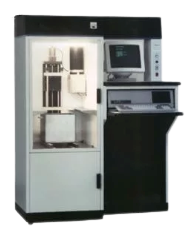

Who invented 3D printing?
Chuck Hull was the founder of 3D Systems and is widely considered to be the inventor of 3D printing. He was the first to patent the technology and developed the first 3D printing system. Hull’s invention was based on the idea of using a laser to create three-dimensional objects from photosensitive resin.
Read moreThe first 3D printer
SLA-1
The SLA-1 is the first 3D printer manufactured for commercial sale and use. This system pioneered the rapid development of additive manufacturing, a method in which material is added layer-by-layer, to form a solid obiect, as opposed to traditional manufacturing in which material is cut or machined away. The SLA-1 is based on stereolithography, using a precisely controlled beam of ultraviolet light to solidify liquid polymers one layer at a time. Charles hull developed stereolithography in 1983 and formed 3D systems to manufacture and market a commercial printer. 3D printers based on hull's design are now widely used to make complex components in a wide variety of materials.
The SLA-1 looked like this:
My 3D printer
Prusa MINI+
I have a printer from the brand Prusa. It is the model Prusa MINI+. I recommend Prusa printers because they are very easy to use, for example they have automatic bed-leveling and there are lots of different models. There are FDM printers, SLA printers and printers that can print with multiple colors at once. Prusa also has their own website where you can download free 3d models and they have their own filament named Prusament.
This is the Prusa MINI+:
Buy your own Prusa 3D printer:www.prusa3d.com
Download free 3D models:www.printables.com
Buy Prusament:www.prusa3d.com/de/kategorie/filament